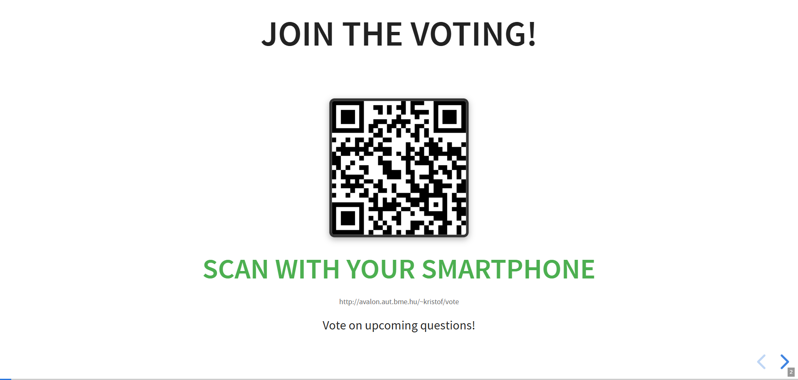
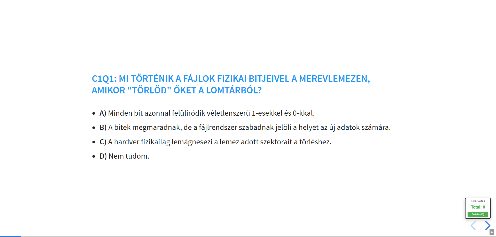
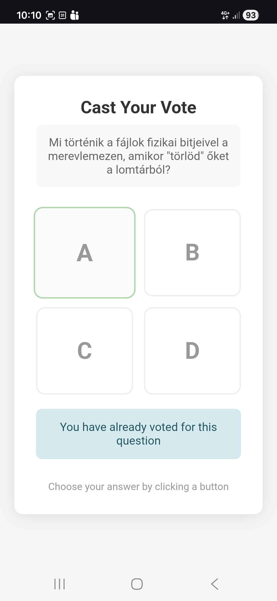
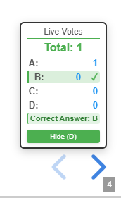

Reveal.js Demo Deck
Code, fragments, images, transitions, and vertical navigation.
Source Code Slide
A readable code-only slide can explain one behavior without switching to the editor.
function onKeyPress(event) {
if (event.key === 'q' || event.key === 'Q') {
toggleQROverlay();
event.preventDefault();
return;
}
if ((event.key === 'd' || event.key === 'D') && isQuestionSlide) {
toggleVoteDetails();
event.preventDefault();
}
}Manual Sequential Reveal
Each bullet is revealed on demand using Reveal fragments.
- Enter a question slide.
- Reset counters in the floating vote display.
- Send new-question to the PHP backend.
- Start polling results every second.
- Press D to reveal detailed counts.
Timed Sequential Reveal
This slide advances its fragments automatically to simulate a guided explanation.
Reveal keeps advancing the fragments automatically.
Single Image Slide

Two Images on One Slide
|
 |
 |
Image and Source Code Together
|
 |
|
Images Inside Text
The presenter shows a QR code, the audience opens the voting page on a phone, and the presentation updates through the PHP backend.
This pattern is useful when you want visual anchors inside explanatory text without switching to a gallery layout.
Transition Showcase
The next step uses a different transition and also opens a vertical navigation branch.
Branching Navigation
Main Slide → Next Topic ↓ Vertical Detail
Press down arrow now to see the continuation branch inside the same topic.
Vertical Detail A
Why use vertical slides?
|

|
Vertical Detail B
This closes the branch with a compact checklist.
- Horizontal slides carry the primary narrative.
- Vertical slides act like expandable subchapters.
- The same deck can combine both without extra plugins.